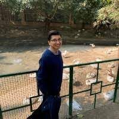

|  |
Rohan Uprety
Software Developer at Siemens
|
Summary
- Software Engineer with 3 years of experience at Siemens, Bengaluru.
- C/C++ developer with experience in Object Oriented Analysis and Design (OOAD) and Object Oriented
Programming (OOP
- Experience in LINUX IDE for C/C++ , LINUX command Line tools.
- Experience in Agile and Scrum methodologies.
- Capable of meeting tight deadlines with excellent overall project and product development life cycle
experience and team
spirit. Excellent analytical and communication skills (verbal and written).
- Experience in coordinating and implementing the activities planned with the Onsite Development teams and
delivering
within the stipulated time frame.
Skills
| Programming Language |
C++, HTML |
| OS |
Windows, Linux |
| Software Frameworks |
.Netcore, .NetFramework |
| Networking |
TCP/IP, Wireshark, Socket Programming |
| Debugging tools |
Valgrind, Gdb, Visual Studio |
| Test Frameworks |
Cppunit, Nunit |
| Build Tools |
Makefiles, MPC (Make project Creator), Nuget Package Manager |
| Version Control |
TFS, Git |
| Static code analysis tools |
SonarQube |
| IDE |
Visual Studio, VS Code |
Education
SRMIST(SRM Institute of Science and Technology), Chennai, India
B.TECH in Electronics and Instrumentation Engineering with CGPA of 9.52, July 2014- May 2018
- Got Merit-based scholarship in 1st and 2nd years of engineering which is given to top 5 students in EIE
Dept.
Work Experience
Siemens Technology and Services Pvt. Ltd, July 2018-Present
Software Developer
-
Developed a Managed Layer on top of C++ static library using CppSharp, Pinvoke and .Netcore. This
enabled
certain Windows .Net Siemens
application which uses this C++ library beneath , to now become crossplatform and run on Linux too
-
Integrated building of .Netcore projects on Windows and Linux into Build Tool Chain used in project i.e
MPC
-
Developed C++ and C# wrappers for TLS based encrypted communication.This helps to provide TLS based
encrypted communication in HMI’s,
Dekstop Application such as TIA portal, and on Linux base applications of Siemens.
-
Developed several SonarQube plugins for static code analysis of project, which helped in improving the
code
quality of the project.
Siemens Technology and Services Pvt. Ltd
, Jan 2018-July 2018
Intern
-
Designing the UI for the various applets in the HMI panel related to Network settings, reboot, panel
information, project transfer, OS update etc.
Design of the UI using QT/QML.
Awards
| 2019 |
Spot Award, For work done in implementing Managed Interface of OMS on Linux and setting up the build
infrastructure to build Managed code on Linu |
| 2018 |
Best Project Award , For the project “Automatic Weed Detection and Smart Herbicide Sprayer Robot” in a
Project Competition held on May 3rd and 4th, 2018 at SRM Institute of Science and Technology. |
Contact Me